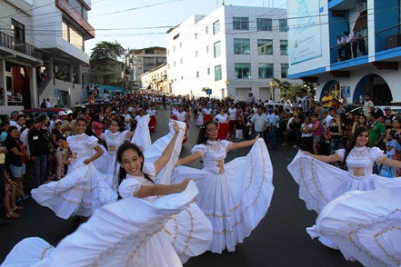
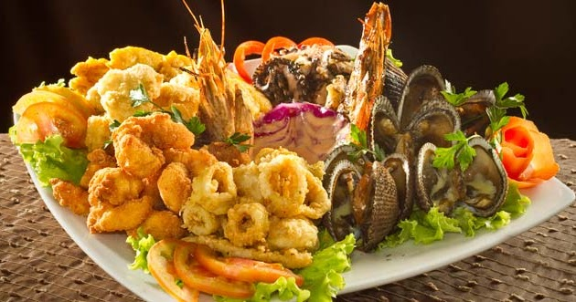
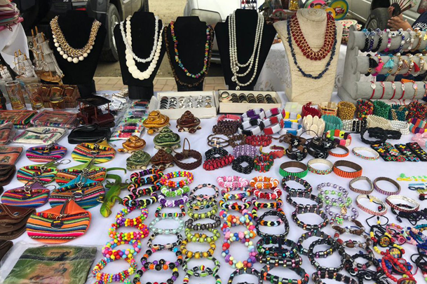
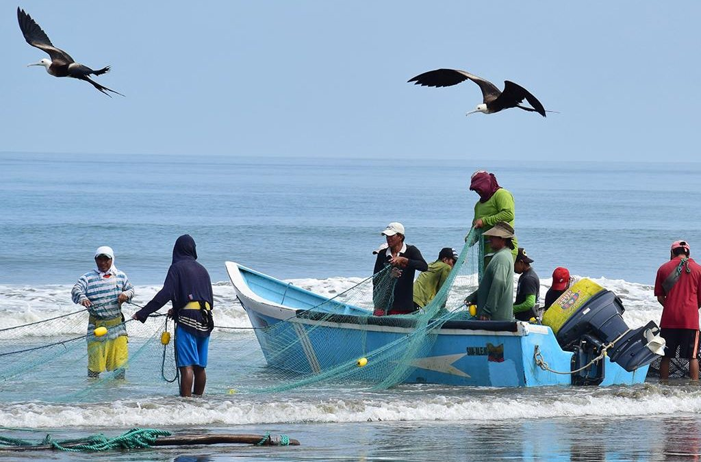
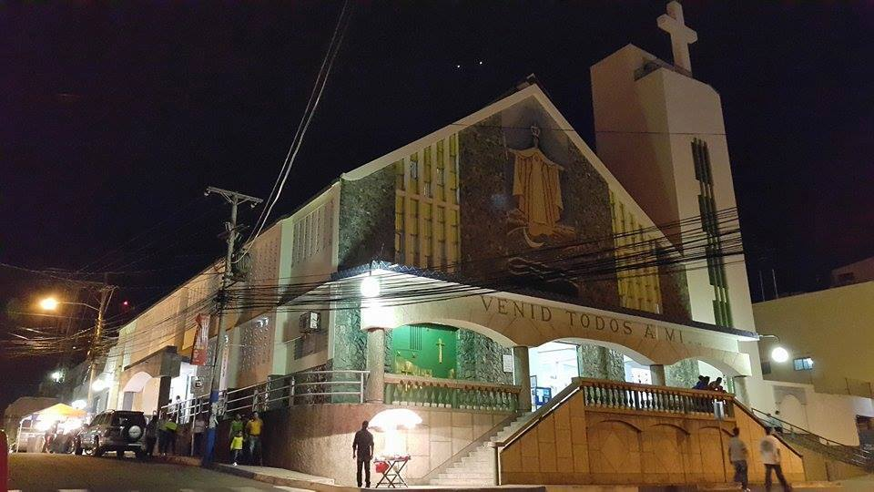

1.-Fiestas y Celebraciones: Eventos como el Festival Internacional de Musica del Pacifico Manta, que celebra la musica afroecuatoriana, y la celebracion de San Pedro y San Pablo en junio, que incluye procesiones y festividades religiosas.
2.-Gastronomia: Platillos tipicos como el ceviche de camaron, el encocado de pescado, y el bollo con queso son parte de la dieta local y se disfrutan durante festividades y ocasiones especiales.
3.-Artesania: La producción artesanal de sombreros de paja toquilla, conocidos internacionalmente como sombreros de Panama, es una tradición importante en Manta.
4.-Pesca: Manta es conocida como uno de los principales puertos pesqueros de Ecuador, y la pesca es una actividad central en la vida economica y cultural de la ciudad.
5.-Religión: La religion catolica juega un papel importante, con celebraciones religiosas y fiestas locales que reflejan la fe y devocion de la comunidad.
| Manta |
| galeria |
| estadistica grafica |
| sitio turistico |